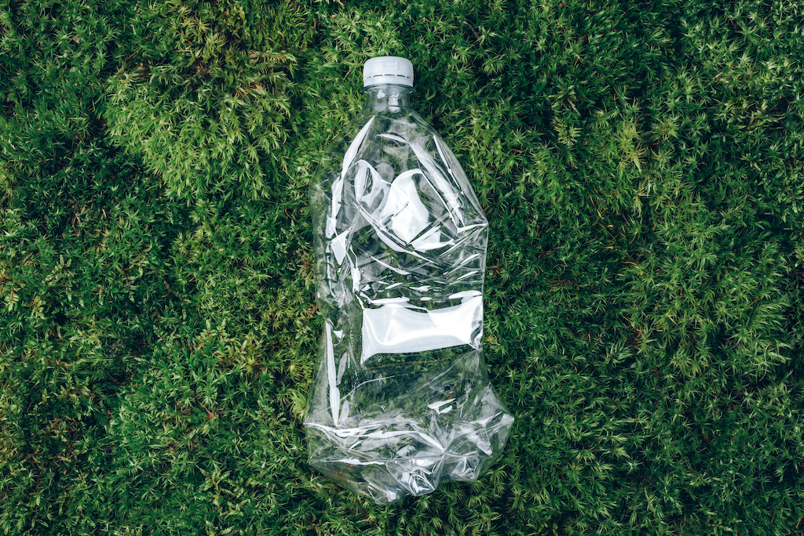

GreenCycle | Ganar Dinero Reciclando | 8/04/2024
¿Sabías que reciclar no solo es una forma de cuidar el medio ambiente, sino también una oportunidad para generar ingresos adicionales? En este post, exploraremos cómo el reciclaje puede ser beneficioso tanto para tu billetera como para el planeta.
1. Venta de materiales reciclables: Muchos materiales, como el papel, el cartón, el plástico y el metal, pueden ser reciclados y luego vendidos a centros de reciclaje o empresas especializadas en la gestión de residuos. Estas empresas suelen pagar por estos materiales, lo que te brinda la oportunidad de ganar dinero simplemente separando y entregando tus desechos reciclables.
2. Programas de incentivos municipales: Algunas ciudades ofrecen programas de incentivos para fomentar el reciclaje entre los residentes. Estos programas pueden incluir recompensas en efectivo, descuentos en servicios públicos o puntos canjeables por productos o servicios locales a cambio de reciclar adecuadamente. Participar en estos programas no solo te permite ganar dinero, sino que también contribuye a mantener tu comunidad más limpia y sostenible.
3. Reciclaje de aparatos electrónicos: Los dispositivos electrónicos, como teléfonos celulares, computadoras y tabletas, contienen materiales valiosos que pueden ser recuperados y reciclados. Algunas empresas y organizaciones ofrecen programas de recompra o recogida gratuita de dispositivos electrónicos usados, donde puedes recibir dinero o crédito por intercambiar tus dispositivos antiguos por modelos más nuevos o por simplemente entregarlos para su reciclaje.
1. Conservación de recursos naturales: El reciclaje ayuda a conservar los recursos naturales al reducir la necesidad de extraer materias primas de la tierra. Al reutilizar y reciclar materiales, como el papel, el plástico y el metal, se reduce la presión sobre los ecosistemas naturales y se minimiza la degradación del medio ambiente.
2. Reducción de residuos en vertederos: La práctica del reciclaje reduce la cantidad de desechos que terminan en vertederos, lo que ayuda a evitar la contaminación del suelo, el agua y el aire asociada con la gestión de residuos sólidos. Al disminuir la cantidad de residuos enviados a los vertederos, también se prolonga la vida útil de estos sitios de disposición final y se reduce la necesidad de crear nuevos vertederos.
3. Reducción de la contaminación: Al reciclar materiales en lugar de desecharlos, se reduce la cantidad de energía y recursos necesarios para fabricar nuevos productos a partir de materias primas vírgenes. Esto a su vez disminuye las emisiones de gases de efecto invernadero y otros contaminantes asociados con la extracción, el transporte y el procesamiento de materias primas, contribuyendo así a la lucha contra el cambio climático y la contaminación ambiental.